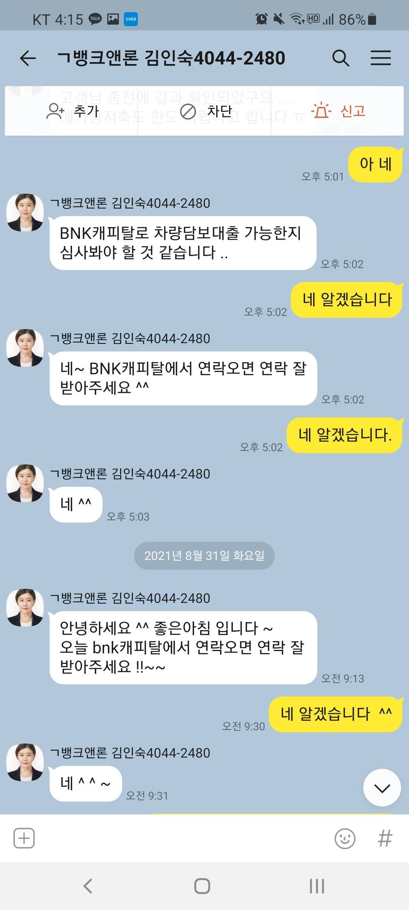
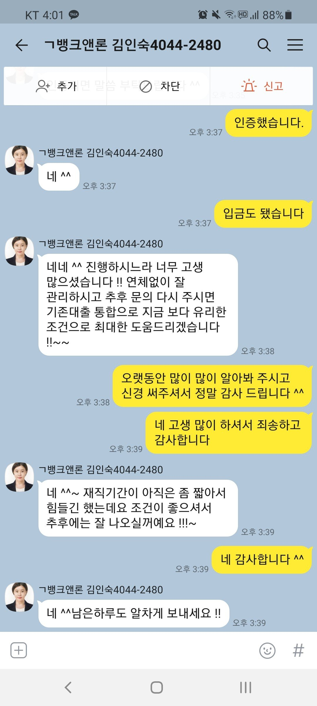
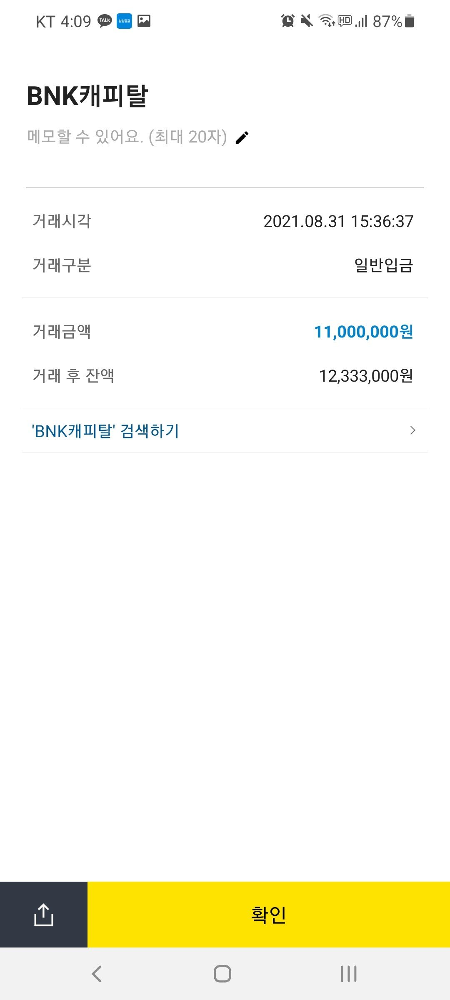

[직장인대출] 김인숙 과장님 감사드립니다.
직장인이지만 입사한 지 아직 얼마 안되어서 잘 될지 많이 걱정했습니다.
연봉이 2천만 원 조금 넘는데 기대출이 3천만 원 가까이 되어 안될 거라고 체념도 했었어요.
그런데 김인수 과장님께서 거의 12군데를 알아봐 주신 덕분에 필요하던 금액보다 더 많은
1,100만 원이나 승인이 되고 입금까지 받았습니다.
재직 기간이 더 늘어나면 대환도 더 알아봐 주신다고 하니
열심히 직장 생활하면서 기다려 보려고 합니다.
힘들 때마다 도와 주시는 뱅크앤론 관계자 분들께 고개 숙여 감사 드립니다.


